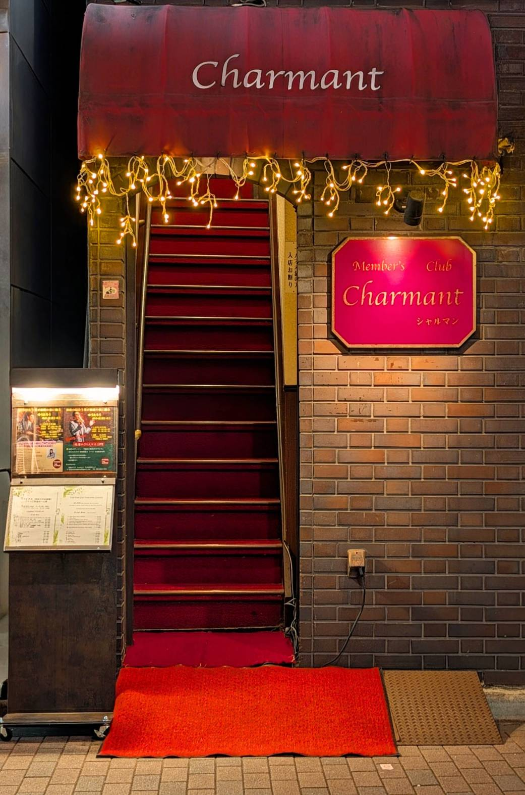
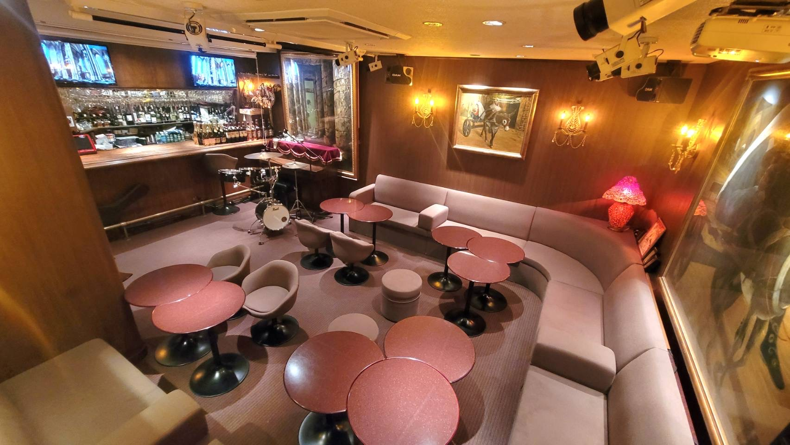
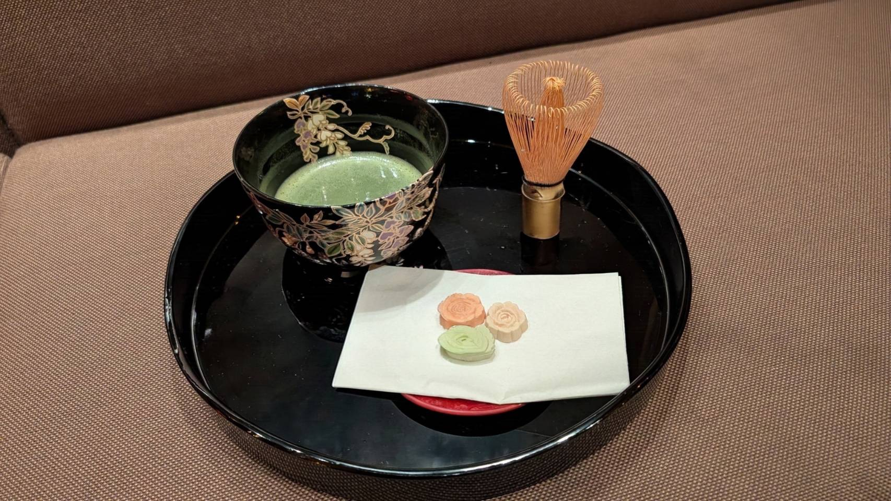
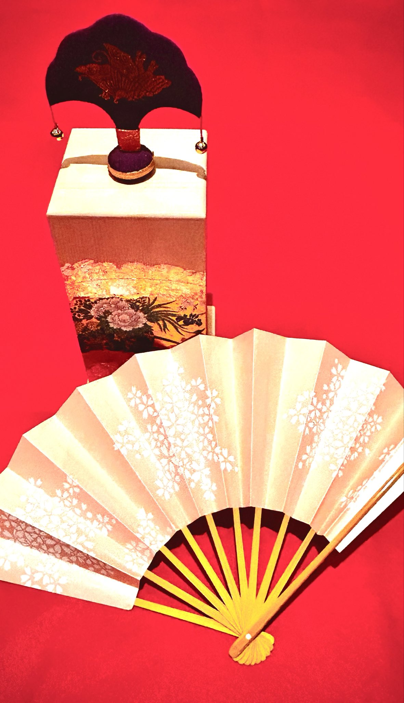

The Story
銀座に受け継がれてきた場
銀座一丁目に根ざして100年以上。四代にわたり商いと人の縁をつないできた歩みの先に、 30年のClub Charmantがあります。
The Story
銀座一丁目に根ざして100年以上。四代にわたり商いと人の縁をつないできた歩みの先に、 30年のClub Charmantがあります。
Three Faces



抹茶と和菓子、投扇興。

投扇興企画中——開催が決まり次第、あらためてご案内します。
詳しく読む 準備中（文化体験の背景・構想のnote記事）
通常のご利用は紹介制です。初めての方は、開催されるLIVE、または貸切のご相談からどうぞ。
LIVE
月に一度、Club Charmant では「銀座昭和浪漫倶楽部」の夜を開いています。 昭和の銀座が育んだ音楽と語りを、舞台と客席の近い距離でともにする時間です。
Private
少人数の会食から、記念の日の集まりまで。Club Charmant は一室を貸切でご利用いただけます。 人数やご予算、当日の過ごし方に合わせてご相談を承ります。